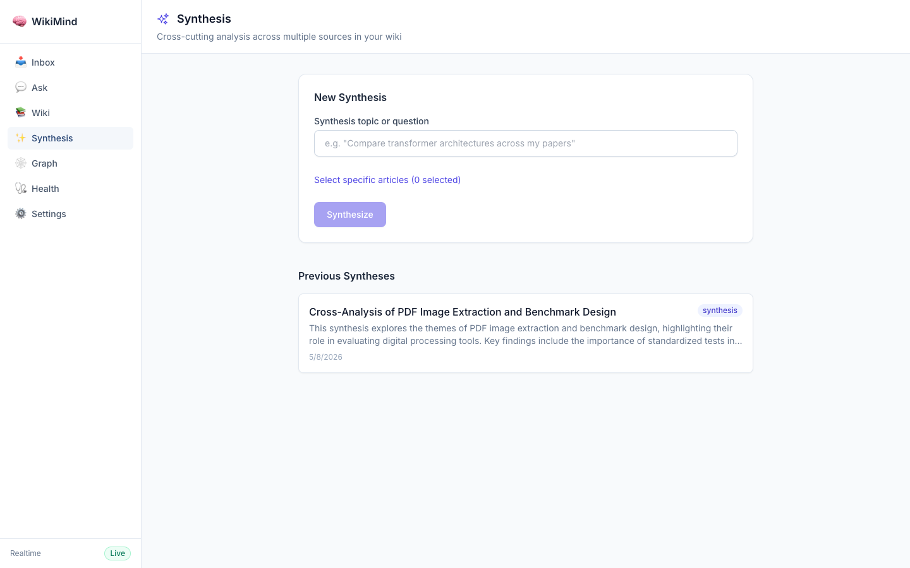
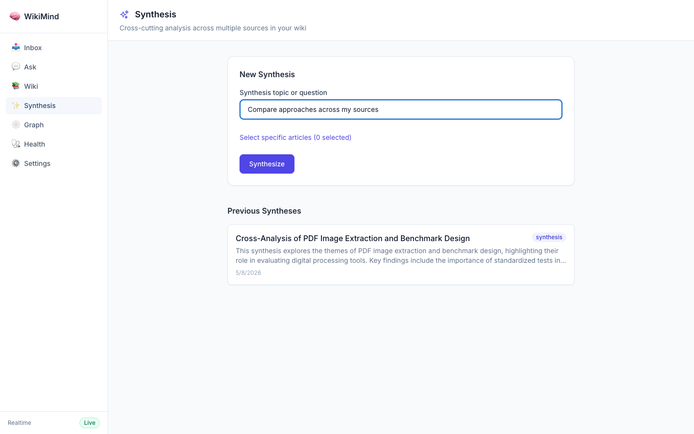
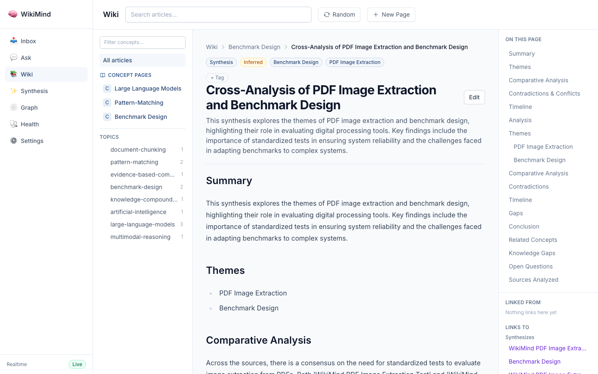
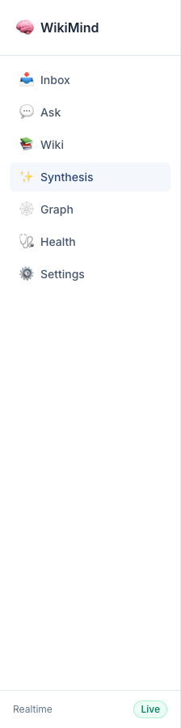

Feature evidence for feat: synthesis pages for cross-cutting analysis (#415)
| File | Change |
|---|---|
src/wikimind/models.py | Added SynthesisCompilationResult, SynthesisFrontmatter, CreateSynthesisRequest, SynthesisResponse models |
src/wikimind/engine/synthesis_compiler.py | New synthesis engine: finds relevant articles, calls LLM for cross-cutting analysis, persists result |
src/wikimind/api/routes/synthesis.py | API endpoints: POST /api/wiki/synthesize and GET /api/wiki/synthesis |
src/wikimind/main.py | Registered synthesis router |
src/wikimind/config.py | Added synthesis_max_sources setting (default: 15) |
tests/unit/test_synthesis.py | 9 unit tests covering article finding, compilation, API, and model validation |
| File | Change |
|---|---|
apps/web/src/components/synthesis/SynthesisView.tsx | New synthesis page with form, article picker, and previous syntheses list |
apps/web/src/api/wiki.ts | Added createSynthesis() and listSynthesisPages() API functions |
apps/web/src/types/api.ts | Added SynthesisResponse type |
apps/web/src/App.tsx | Added /synthesis route |
apps/web/src/components/shared/Layout.tsx | Added Synthesis nav item to sidebar |
The /synthesis page shows the form for creating a new synthesis with topic input, optional article picker, and a list of previously created synthesis pages.

The synthesis form with a query entered, ready to submit. The "Synthesize" button becomes enabled when the query has at least 3 characters.

A completed synthesis page viewed in the wiki explorer. Shows the "Synthesis" page type badge, "Inferred" confidence level, concept tags, structured sections (Summary, Themes, Comparative Analysis, Contradictions, Timeline), and "Synthesizes" backlinks to source articles in the sidebar.

The Synthesis link appears in the main navigation sidebar between Wiki and Graph, with a sparkle icon to differentiate it from other page types.

| Method | Endpoint | Description |
|---|---|---|
| POST | /api/wiki/synthesize | Create a synthesis page from a query/topic. Requires 2+ relevant articles. |
| GET | /api/wiki/synthesis | List all synthesis pages for the current user. |
9 tests passing
test_find_relevant_articles_by_ids - Direct article ID lookuptest_find_relevant_articles_by_keyword - Keyword-based relevance searchtest_find_relevant_articles_no_match - Empty results for unmatched queriestest_synthesize_not_enough_articles - Returns None with fewer than 2 articlestest_synthesize_success - Full end-to-end synthesis with mocked LLMtest_create_synthesis_api_no_articles - API returns 422 when no articles matchtest_create_synthesis_api_validation - API rejects queries shorter than 3 charstest_list_synthesis_pages_empty - Empty list endpoint workstest_synthesis_compilation_result_model - Pydantic model validates correctly